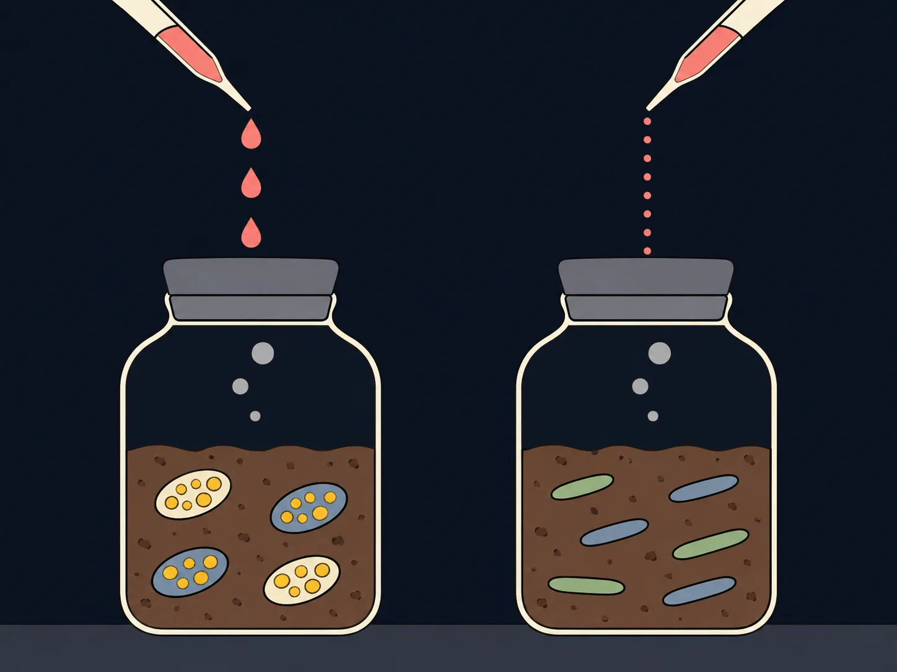
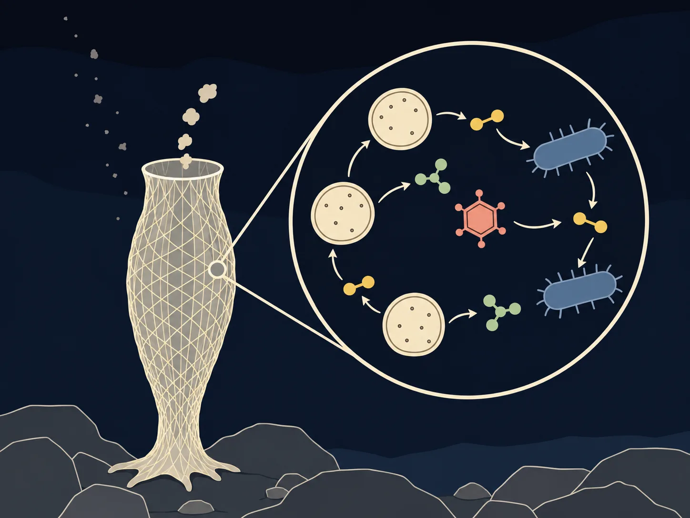
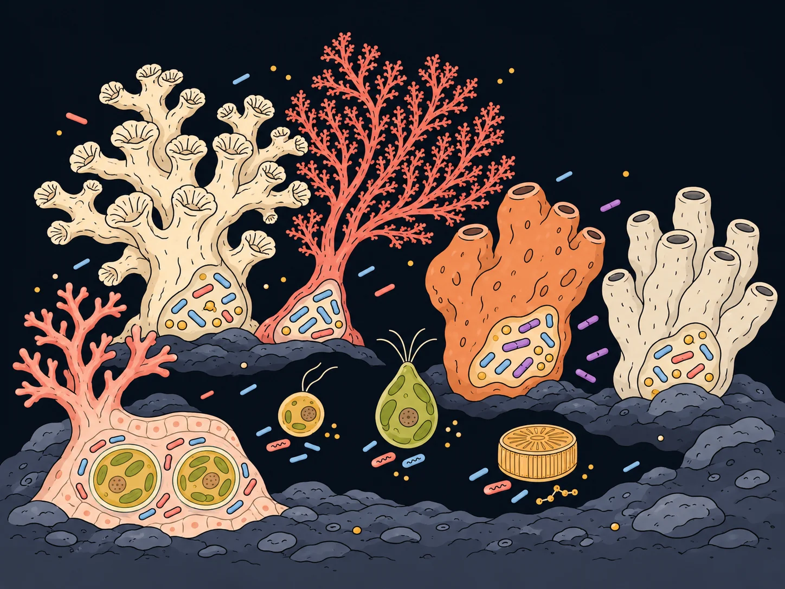
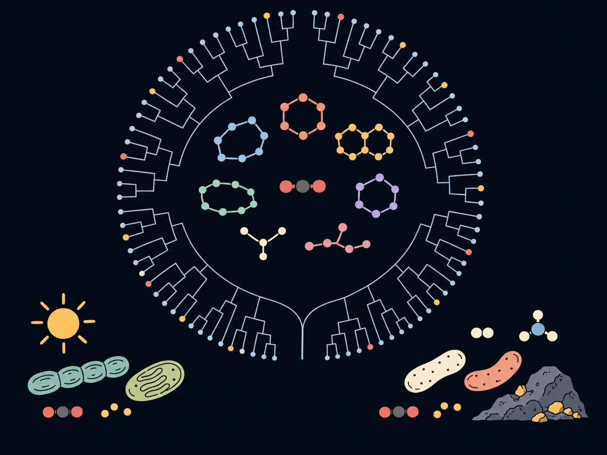

Research
Life runs on a small set of elements, and none of them stays in living matter for long. Carbon, nitrogen and phosphorus pass from rock, air and water into cells and back out again, and microbes carry out most of the steps in between. I study those steps in soils and in the microbiomes of marine hosts, asking how microbes obtain the elements and what their metabolism means for the host and the ecosystem around them.
How do soils hold on to carbon, nitrogen and phosphorus when supply comes in pulses?
The textbook soil microbe keeps a fixed ratio of carbon to nitrogen to phosphorus in its biomass, growing only as fast as the scarcest element allows. Real soil microbes are more flexible than that. When carbon arrives in a pulse they build reserves such as the polyester PHB and storage lipids, so the carbon to phosphorus ratio of the community can rise sharply, and when phosphorus is short they replace the phospholipids in their membranes with lipids that contain none. That flexibility should let a community take up a pulse of carbon and nutrients faster than it could grow on it, and so keep in the soil what would otherwise be lost. At the University of Sydney I test this in incubations that feed soil ¹³C labelled substrate in pulses or at a constant rate and follow the label into biomass, storage compounds and respired CO₂, with heavy water (²H₂O) added alongside so that the lipids of growing cells tell me which microbes a pulse favours.

How do we get from raw reads to answers?
Since joining the University of Sydney in 2025 I have written the pipelines my students and collaborators needed, then released them so other groups can use them. HiFiTaxa and AmplinkOne are postdoctoral work. Research groups in Australia, Denmark, Saudi Arabia, Brazil and Sweden use pipelines I wrote. Each one is built to run the same way on a laptop and on a cluster, with the reference databases versioned so a result can be reproduced a year later.

-
HiFiTaxa
Under review Preprint on bioRxiv, under review at ISME Communications
A Nextflow pipeline that takes raw PacBio HiFi reads for the full length 16S rRNA gene or the fungal ITS region to taxonomy in a single command. It builds versioned references from current GTDB and UNITE releases and runs BLCA, naive Bayes, Emu and EMITS classifiers so their calls can be compared on the same samples. Benchmarked on mock communities and on holdout tests in the preprint.
-
AmplinkOne
Under review Under review at ISME Communications
A reproducible and modular R workflow that carries marker gene amplicon data through the downstream analysis, from ASV and taxonomy tables to community statistics and publication figures. Written with colleagues at the University of Sydney. The manuscript is under review and the code will be released with it.
PhD
What powers life where no light reaches?
Deep sea sponges live in permanent darkness, where little food arrives. In my PhD, I investigated how their microbial symbionts make this possible. The answer, across four papers, is a community built around ammonia oxidising archaea that turn host ammonia into energy and fixed carbon, alongside heterotrophs that break down carbon too tough for most organisms, with viruses and metabolite exchange tying the partners together.

-
Ammonia oxidation and recalcitrant carbon degradation fuel mixotrophic growth in the symbiont community of a deep-sea sponge
Published N. Garritano A et al. Microbiome 14, 153 (2026)
Metagenomics, metatranscriptomics and isotope labelling of the deep sea sponge Calyx sp. Heterotrophs break down tough algal polysaccharides from marine snow while two ammonia oxidising archaea fix carbon worth about a fifth of the sponge’s body carbon a year. The community is mixotrophic.
-
Simple Porifera holobiont reveals complex interactions between the host, an archaeon, a bacterium, and a phage
Published N. Garritano A et al. The ISME Journal 18, wrae197 (2024)
The glass sponge Aphrocallistes beatrix hosts one archaeon and one bacterium, the simplest sponge holobiont reported. The archaeon runs on sponge ammonia and feeds the bacterium fumarate, and a virus that lyses the archaeon supplies the vitamin B12 the bacterium cannot make. Covered by BBC News.
-
Species-specific relationships between deep sea sponges and their symbiotic Nitrosopumilaceae
Published N. Garritano A et al. The ISME Journal 17, 1517–1519 (2023)
In three deep sea sponge genera, ammonia oxidising archaea make up at least three quarters of the microbial community, so these holobionts can fix carbon in the dark. Each sponge species carries its own archaeal lineage, which points to vertical transmission. Cited in an international patent application.
-
Symbiotic Ammonia Oxidation in the Marine Environment
Published Thomas T, N. Garritano A. Annual Review of Marine Science 18, 409–427 (2026)
An invited review of ammonia oxidation by microbes living in or on marine animals, from sponges and corals to bivalves and crustaceans. It covers the dominance of Nitrosopumilaceae, the variation in rates between hosts, genomic adaptation to life in a host and the open questions.
Who are the symbionts and how are they related?
Deep sea expeditions off Brazil, where I was the only member of my group on board, started collaborations that continue today. These papers describe the symbiont lineages that recur across corals, crinoids and sponges, the names and genomes that pin down who they are, and the data released so that others can use them.

-
Putative promiscuous symbionts in deep-sea corals and crinoids may contribute to nitrogen cycling
Published Modolon F, N. Garritano A et al. Microbiome 13, 234 (2025)
Deep sea corals and the crinoids that live on them share the same Endozoicomonadaceae and Nitrosopumilaceae symbionts. A new dominant species, Endozoicomonas promiscua, can reduce nitrate to ammonia, a possible feed for the archaea and a nitrogen cycling link across hosts.
-
The novel, wide-spread sponge-associated phylum Spongivicinota shows metabolic complementarity to its sister-phylum Latescibacterota
Published Allen MA, N. Garritano A et al. ISME Communications 6, ycag317 (2026)
Seventeen genomes from deep sea sponges define Spongivicinota, a proposed phylum for a widespread clade known until now by placeholder names. Its members live mostly in sponges and corals beside their sister phylum Latescibacterota and specialise in degrading complex peptides.
-
Resolving the evolutionary duality of marine symbionts: redefining the genus Endozoicomonas and proposing Neoendozoicomonas gen. nov.
Published Modolon F, N. Garritano A et al. ISME Communications 6, ycag123 (2026)
Phylogenomics across 63 genomes redraws the genera of the Endozoicomonadaceae, symbionts of corals, sponges, molluscs and fishes. Core proteome identity resolved genera best and splits Endozoicomonas into Endozoicomonas sensu stricto and the new genus Neoendozoicomonas.
-
Metagenome-assembled genomes and viral sequences from deep-sea sponges
In press Allen MA, N. Garritano A et al. Scientific Data, in press (2026). No DOI yet
A data descriptor for the metagenome assembled genomes and viral sequences recovered from deep sea sponges during the PhD, released so that other groups can build on them.
How do microbiomes differ between hosts and places?
Not every microbiome is specific to its host, and not every host keeps the microbes it is given. These collaborative papers compare communities between coral species on the same seafloor, follow coral probiotics into sponges, isolate the bacteria living against algal cells inside coral tissue, and watch bacteria change their behaviour with the microalga they grow on.

-
Contrasting microbiomes in deep-sea scleractinian and octocoral species from the South Atlantic Ocean
Published Hill LJ, Damasceno T, N. Garritano A et al. Sustainable Microbiology 3, qvag048 (2026)
Amplicon sequencing of stony corals and octocorals from 710 metres in the Campos Basin shows each species carrying a community distinct from the water and sediment around it. The octocoral Candidella imbricata had the most specialised microbiome, dominated by Endozoicomonadaceae.
-
Not only for corals: exploring the uptake of beneficial microorganisms for corals by sponges
Published Ribeiro B, N. Garritano A et al. npj Biofilms and Microbiomes 10, 125 (2024)
A four week field trial gave coral probiotics to two sponge species. Related strains were enriched in Stylissa carteri, both microbiomes shifted, and the sponges stayed healthy and kept pumping, so treating nearby corals is unlikely to harm them.
-
Bacteria associated with the in hospite Symbiodiniaceae’s phycosphere
Published Hill LJ, Messias CSMA, Vilela CLS, N. Garritano A et al. iScience 27, 109531 (2024)
A Percoll gradient enriches intact Symbiodiniaceae cells and their attached bacteria from Pocillopora damicornis tissue. Halieaceae, Flavobacteriaceae and Alcanivoraceae associate with the algal cells inside the host, opening the phycosphere within coral tissue to study.
-
Dual transcriptomics reveal commensal interactions between microalgae and phycosphere bacteria
Under review Roager L, Schostag M, N. Garritano A, Gram L, Egan S. bioRxiv (2026). Under review
Dual transcriptomics of two phycosphere bacteria grown with three microalgae. The bacterial transcriptomes changed with the host, and in co culture with the diatom Conticribra weissflogii a Maribacter sp. switched on polysaccharide degradation genes and grew on laminarin alone.
Where is carbon fixed across the tree of life?
Carbon fixation is the entry point of carbon into living matter, yet its distribution across bacteria and archaea had not been mapped at scale. I built hidden Markov models for the key enzymes of the six known pathways and screened 52,515 metagenome assembled genomes with them, then used the same models to find the pathways in the sponge symbionts above. The models are public as HMM_CFP on GitHub, and I am extending the approach with random forest classifiers trained on genome annotations.

-
Carbon fixation pathways across the bacterial and archaeal tree of life
Published N. Garritano A, Song W, Thomas T. PNAS Nexus 1, pgac226 (2022)
Hidden Markov models screened 52,515 genomes and found carbon fixation pathways in 1,007 of them, including the reverse TCA cycle in phyla where it had not been recognised and a cycle thought to be archaeal in bacteria. Carbon fixation is far more widespread than the textbook picture.
Master’s
Can waste become fuel?
My master’s research used mixed microbial consortia to ferment palm oil mill effluent, the wastewater of palm oil extraction, into hydrogen and then methane, with decentralised energy for remote parts of Brazil as the aim. It is where I learned gas chromatography and how to follow carbon and energy through a microbial community, skills I still use on soils today.

-
Palm oil mill effluent (POME) as raw material for biohydrogen and methane production via dark fermentation
Published N. Garritano A, Faber MO, De Sá LRV, Ferreira-Leitão VS. Renewable and Sustainable Energy Reviews 92, 676–684 (2018)
A review of palm oil mill effluent as a feedstock for hydrogen and methane by dark fermentation, bringing together the microbiology, the process conditions and the reported yields, and the two stage approach that recovers methane from the spent medium.
-
Efficient biohydrogen production via dark fermentation from hydrolized palm oil mill effluent by non-commercial enzyme preparation
Published N. Garritano A, De Sá LRV, Aguieiras ÉCG, Freire DMG, Ferreira-Leitão VS. International Journal of Hydrogen Energy 42, 29166–29174 (2017)
Hydrolysing the effluent with an enzyme preparation made in the laboratory from Ricinus communis, in place of a commercial enzyme, raised the hydrogen yield from dark fermentation of this wastewater.